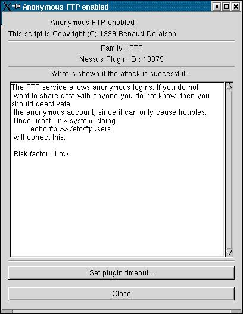

Installing Nessus
Installing nessus
Download the Nessus source distribution from web site https://www.nessus.org under the topic Download and follow the instructions below. There are three ways for installation. Select either way and follow.
- Install Nessus via Internet using the program Lynx. (Lynx is a web browser program which can be downloaded from https://lynx.browser.org.) Use the following command to install:
#lynx -source
https://install.nessus.org
| sh
- Install Nessus using the script called nessus-installer.sh which is located under the directory nessus-installer/. Use the following command: #sh nessus-installer.sh
- Download the compilation software package consisting of:
nessus-libraries-x.x.tar.gz
libnasl-x.x.tar.gz
nessus-core.x.x.tar.gz
nessus-plugins.x.x.tar.gz(x represents the version of the software at the time.)
Untar and unzip all the files above using the command.
#tar xvfz nessus-libraries-x.x.tar.gz
#tar xvfz libnasl-x.x.tar.gz
#tar xvfz nessus-core.x.x.tar.gz
#tar xvfz nessus-plugins.x.x.tar.gz
Compile each file starting from nessus-libraries as follows:
#cd nessus-libraries
#./configure
#make
#make install
(For the last command, make install, you must be root to do so.)
Compile libnasl:
#cd libnasl
#./configure
#make
#make install
(For the last command, make install, you must be root to do so.)
Compile nessus-core:
#cd nessus-core
#./configure
#make
#make install
(For the last command, make install, you must be root to do so.)
Compile nessus-plugins:
#cd nessus-plugins
#./configure
#make
#make install
After all compilation has been done, there are two important files created, i.e., nessusd which is Nessus' server and nessus which is its client.
In case of using Linux, add path /usr/local/lib to the file /etc/ld.so.conf to incorporate Nessus' library (as compiled above) so that Nessus when started will be able to find its library. Use the following command to update the new path.
#echo "/usr/local/lib" >> /etc/ld.so.conf
#ldconfig
To use Nessus, there are two things one has to do. The first is to create a new user account, together with specifying his/her access privilege. The second is configuring Nessus' client.
1. New user account creation and access privilege
Use the script nessus-adduser located in /usr/local/sbin to generate a new account for a user. The user will login to use Nessus via this account.
In Figure 1, specify a new user name, in which case joey is the user name as shown in Figure 2.
In Figure 2, select the method to keep the password (joey's password) on the server. Select plaintext if the password is to be kept as it is. Select cipher if the password is to be kept encrypted.
Let us call account joey 'login-name' in Nessus and call account root on Linux 'user-name'. This is just to make calling the two names different.

In Figure 3, the system administrator can assign a privilege to allow which part of network joey can connect or can login to. For example, the administrator can assign only the IP address which is joey's machine or a subnet like 192.168.1.0/24. In the figure, the default value is anywhere which means joey can connect from anywhere.
Figure 4 shows assigning the password for account joey. This password is requested by the server but is asked only once. That is, the first time joey logins to use Nessus and the next time onwards the server will no longer ask for this password. Therefore, this is the reason why we call this password one-time password.
In logging in to use Nessus, it is necessary to supply a passphrase which is another, not the one-time password. After the passphrase supplied, if this is the first time login, Nessus will ask the user to provide his/her one-time password. If not, Nessus will just let the user pass as long as the passphrase is correct.
Figure 5 is specifying the network scan privilege allowed to joey. That is, which part of network can joey scan? For example, we may allow joey to scan only an IP address or a subnet. When done, press Ctrl-D to finish the process. If the privilege is not specified, joey is then allowed to scan everywhere in the network. See more details about the privilege specification in the manual pages nessus-adduser.
In Figure 6, Nessus will ask for confirmation for correctness of all the data items given above.
If y (yes), the new user joey is added to the system and the screen will show 'user-added' message which means the process has been completed as shown in Figure 7.
nessusd has the configuration file /usr/local/etc/nessusd.conf for the system administrator to fine-tune the server via this file. We can use the command nessusd –s in Figure 8 to show up all configuration values on screen.
After checking all the values already, we are now ready to start nessusd. To do so, we must login on Linux as root. The command to start the server is shown in Figure 9.
To check if the server is running, use the command like in Figure 10.
2. Nessus client configuration
The client program client nessus is located in /usr/local/bin/nessus. Use the follwing command to start the client.
The symbol & in the figure is starting the program in background mode. Note that the user who starts the client program uses 'user-name' snort on Linux.
In Figure 12, when a user starts the nessus client program the first time, Nessus creates a private key for the user according to 'user-name' on Linux, snort in this case. That is, one 'user-name' on Linux matches one unique private key, which is one-to-one relationship.
Having created the private key already, Nessus will ask the user to enter a passphrase for the key just created. The user must keep it secret. The second line in the figure is confirmation for the passphrase.
This is the login window. Before logging in to use Nessus with an account (joey in the figure), the user needs to supply the IP address where nessusd is running, nessusd's port, and encryption method used in communicating between a client and the server. In the figure, nessusd server is running at address 192.168.176.210 at port 1241 (which is Nessus' default port) and twofish/ripemd160:3 as the encryption method.
Note that 'login-name' in Nessus is Fig 13 is joey whereas 'user-name' on Linux is snort. If this is the first time joey logs in to use Nessus, the server will ask joey to supply his/her one-time password (as given in Figure 4). With the correct password, the server will bind 'login-name' joey with the private key of 'user-name' snort on Linux. This means 'login-name' joey won't be able to login to use Nessus under other 'user-name's, except 'user-name' snort.
For subsequent logins of joey (not the first time login) to use Nessus, the server will ask for his/her passphrase (for the private key) only but will no longer ask for his/her one-time password.
However, one 'user-name' on Linux can have many 'login-name's in Nessus, e.g., apart from joey for 'user-name' snort, there can be other 'login-name's for snort whose network scan privileges can be different.
In Figure 14, after entering joey as 'login-name', the server will ask joey for his/her one-time password (which was selected at the time 'login-name' joey was created by nessus-adduser).
After login, Nessus will start at the plugin selection window. The user can select the plugins that s/he wants by enabling or disabling the little squares on the right hand side. The lower window shows various choices of a plugin that the user can enable or disable. In the figure, the user is on the FTP plugin where s/he can further select various FTP vulnerabilities to scan for.
In Figure 15, when the user clicks on the vulnerability Anonymous FTP Enabled in the lower window, the system shows additional details for this vulnerability, which describes that if the organisation doesn't need to share information with others, then turn off the anonymous FTP.
In this window, the user can configure additional options for the plugins selected. For example, in pinging machines in a network, the user can ping using the TCP or ICMP protocol.
In this window, the user can specify the scan details, e.g., ports to scan (in the figure from port 1-15,000), the number of simultaneous scans (8 scans in the figure), the location for CGI scripts. Typically port scanning in Nessus is done through another program called nmap.

In this window, the user can select a target machine or a subnet to scan for vulnerabilities. In the figure a subnet 192.168.176.0/24 is to be scanned. Use a comma ',' to separate between targets to scan. The user can also check if a machine with DNS can be zone-transferred by selecting a button 'Perform a DNS zone transfer'. (For security reasons, zone information is allowed to transfer only by the machine with access privilege.)
The user can change his/her passphrase to get in Nessus or even remove the private key and also specify additional network scan privileges using the Add-rule button.
This window shows all the Nessus developers, the current version, and its web site to find more information about Nessus.
After checking all the windows' setting, the user can now start scanning the target network as specified in the target selection window by clicking the button 'Start the scan' at the bottom of the window.
Figure 22.1 shows the status of scanning a subnet whereas Figure 22.2 shows scanning a single machine. At any time, the user can stop scanning an individual machine if desired by clicking 'Stop' to the right hand side or even stop all the scans completely by clicking 'Stop the whole test'.
This figure shows the result of scanning the machine 192.168.176.130. The left window shows security alerts about the vulnerabilities found. For the right window, when clicking on each little circle, the user will get more details about the vulnerability.
Figure 24 displays the result of scanning the machine 192.168.176.130 on Web. After scanning a machine, Nessus produces a file index.html which can be displayed on Web, just like the one for the machine 192.168.176.130. The piechart shows in percent the four categories of security risks, Low, Medium, High, and Serious. This shows the level of security problems found in the network which potentially leads to seeking ways to cure these problems.